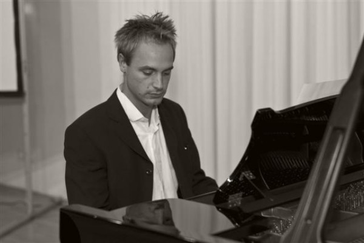

Concerts

Dimanche, 14.10.18, 19h
Heimatmuseum Steglitz, Berlin
Lieder & Aires de R. Strauss, P.I. Tschaikowsky & G. Rossini
Mirjam Parma, Mezzosoprano & Yannick Wirner, piano
Mardi, 22.05.18, 20h30
BKA-Theater, Berlin
Oeuvres contemporaines et créations pour violon, piano et éléctronique
Concert dans le cadre du festival hebdomadaire "unerhörte Musik"
Michiko Feuerlein, violon & Yannick Wirner, piano
Samedi, 10.03.18, 18h
Künstlerhof Alt-Lietzow 12, Berlin
Oeuvres pour violon et piano
Concert pour l´inauguration du "Künstlerhof Alt-Lietzow 12"
Michiko Feuerlein, violon & Yannick Wirner, piano
Dimanche 05.11.17, 17h
Kreuzkirche, Braunschweig
B. Proeve: Luther - Die Wegkreuzung *Création mondiale*
Kantate pour Soprano, Mezzosoprano, Violon, Piano, Percussion et musique éléctronique
Mardi, 20.12.16, 20h
Schwartzsche Ville, Berlin
Chants pour Soprano & Piano de Curt Protze
Dimanche, 10.01.16, 18h
Salle de musique de chambre de la UDK, Berlin
Alfred Schnittke: Quatuor pour piano
Samedi, 21.11.15, 18h
Château, Oranienburg
Concert des professeurs et élèves du conservatoire d´Oranienburg
Oeuvres de musiques de chambre
Samedi, 07.11.15, 17h
Eglise St. Gotthardt, Brandenburg an der Havel
Oeuvres de Karl Amadeus Hartmann, K.-H. Wahren et J.S. Bach
Residenzorchester Berlin sous la direction de Jon Bara Johansen
Solistes: Michiko Feuerlein, Violon & Martin Bosse-Platière, flûte
Pour plus d´infos cliquez ici
Samedi 31.10.15 à 16h30
BSR- Salon de l´automobile, Braunschweig
"Soundscapes, Moteur & Emotions"
Musique de Bernfried Proeve pour Violon, Cor, Percussion, Piano, Contrebasse, Voix & 5000 CV
Dimanche, 15.03.15, 16h
Heimatmuseum Steglitz, Berlin
Lieder et musique de chambre de Curt Protze, Arnold Ebel & Martin Grabert
Pour plus d´infos cliquez ici
Jeudi, 27.11.14, 20h
Festival St. Cecilia, Badajoz (Espagne)
Oeuvres de Milhaud, Ives, Sprintz et Bartòk
Trio Grosz
Michiko Feuerlein, Violon
Jason Denner, Clarinette
Yannick Wirner, Piano
Samedi, 15.11.14, 18h
Musikwerkstatt Eden, Oranienburg
Oeuvres de Milhaud, Ives, Sprintz et Bartòk
Trio Grosz
Michiko Feuerlein, Violon - Jason Denner, Clarinette & Yannick Wirner, Piano
Tournée d´orchestre avec la "Junge Deutsche Philharmonie"
Oeuvres de Prokoffiev, Martinu, Schnittke & Haydn
Direction: Sir Neville Marriner
Mardi 09.09.2014 / 20.00 Fulda, Schlosstheater
Lundi 08.09.2014 / 19.30 Hanau, Congress Park
Dimanche 07.09.2014 / 19.00 Francfort, hr-Sendesaal
Samedi 06.09.2014 / 19.00 Stuttgart, Theaterhaus - Großer Saal
Vendredi 05.09.2014 / 19.30 Zermatt, St. Mauritius Pfarrkirche
Pour plus d´Infos: www.jdph.de
Dimanche, 17.08.14, 20h
Bockenheimer Depot, Francfort
Pièces d´Arnold Schönberg et d´Emmanuel Nunes
Orchestre de la "Junge Deutsche Philharmonie"
Direction: Michael Wendeberg
Samedi, 16.08.14, 11h
Freimaurerloge, Francfort
Pièces de Anton Webern, Alexander Zemlinsky et Alban Berg
Orchestre de la "Junge Deutsche Philharmonie"
Direction: Michael Wendeberg
Dimanche, 10.08.14, 20h
Admiralspalast, Berlin
Pièces de Arnold Schönberg et d´Emmanuel Nunes
Orchestre de la "Junge Deutsche Philharmonie"
Direction: Michael Wendeberg
Dimanche, 10.08.14, 11h
Admiralspalast, Berlin
Pièces de Anton Webern, Arnold Schönberg et Alban Berg
Orchestre de la "Junge Deutsche Philharmonie"
Direction: Michael Wendeberg
Samedi, 05.04.14, 19h
Haus des Gastes, Bad Bergzabern
Soirée Duo Violon/Piano
Oeuvres de Vitali, Schubert, Ernst, Massenet, Bach, Pärt et Paganini
Violon: Michiko Feuerlein, Piano: Yannick Wirner
Vendredi, 28.03.14, 19h30
Eden, Oranienburg
Soirée Duo Violon/Piano
Oeuvres de Vitali, Schubert, Ernst, Bach, Pärt et Paganini
Violon: Michiko Feuerlein, Piano: Yannick Wirner
2014
Dimanche, 23.06.13, 7h05-8h
France musique
Présentation du CD avec le duo de piano Wirner/Steininger
Emission: "Leur premier CD" par Gaelle le Gallic
Oeuvres d´Olivier Messiaen et de Wolfgang Rihm
Dimanche, 05.05.13, 20h
Philharmonie, Cologne
Bernd Alois Zimmermann (1918-1970): "Requiem pour un jeune poète" (1967–69)
Orchestre de la "Junge Deutsche Philharmonie", Chorale du MDR et du WDR
Direction: Peter Rundel
Tournée avec la « Junge Deutsche Philharmonie »
9ème Symphonie de Mahler et 1. Concerto pour Violon de Schostakowitch
Direction: Jonathan Nott
Solistes: Christian Tetzlaff/ Sergey Khachatryan *
Vendredi, 15.03.2013 Celle (Allemagne)/ Salle des Congrès 20h
Dimanche, 17.03.2013 Francfort / Alte Oper 19h
Mercredi, 20.03.2013 Munich / Gasteig 20h *
Jeudi, 21.03.2013 Heidelberg / Stadthalle 20h *
Vendredi, 22.03.2013 Interlaken (Suisse) / Salle de concert 20h *
Dimanche, 24.03.2013 Cologne / Philharmonie 18h
Pour plus d´Info: www.jdph.de
Dimanche, 03.03.13, 19h
Ecole de musique "Eden", Oranienburg
Olivier Messiaen: Quatuor pour la fin du temps
Michiko Feuerlein: Violon; Lillia Keyes: Violoncelle
Jason Denner: Clarinette, Yannick Wirner: Piano
2013
18.11.2012 - 20.01.2013
KW, Auguststr. 69, Berlin
"One on One"
salle de performance de l´artiste: Annika Kahrs
Oeuvres pour piano à 4 mains
Pour plus d´infos: http://www.kw-berlin.de
Dimanche, 16.09.12, 19h
Alte Oper, Francfort
Mercredi, 19.09.12, 20h
De Singel, Anvers (Belgique)
Jörg Widmann (*1973): "Zweites Labyrinth"
Junge Deutsche Philharmonie
Direction: Thomas Søndergård
Pour plus d´infos & billets: www.jdph.de
Vendredi, 25.05.12, 20h
Pinacothèque, Munich
Concert pour le 60ème anniversaire de Wolfgang Rihm
W. Rihm - "Versuchung" pour Violoncelle et Ensemble (2008)
J. Motschmann - "Augmented reality" (création mondiale)
W. Rihm - "Der Maler träumt" (2009) pour Bariton et Ensemble
Wolfgang Rihm parle de ses Oeuvres
Rainer Scheerer - Bariton
Benedict Klöckner - Violoncelle
Yannick Wirner - Piano
ensemble risonanze erranti
Direction: Peter Tilling
Pour plus d´infos & billets: www.pinakothek.de
Samedi, 28.04.12, 19h
Alte Pädagogische Hochschule, Heidelberg
Johannes Motschmann: "Arpeggiator" (création mondiale)
Jan Masanetz: 2 miniatures pour piano solo (2012) - création mondiale
Dans le cadre du festival: "Heidelberger Frühling" - Concert pour l´anniversaire de Wolfgang Rihm.
Quatuor Danel
Yannick Wirner, Piano
Pour plus d´infos : www.heidelberger-fruehling.de
Dimanche, 25.03.12, 20h
Théatre, Hagen
Franz Schubert: "Le voyage d´hiver"
Dominik Wortig, Ténor
Yannick Wirner, Piano
Pour plus d´infos : www.theater-hagen.de
Dimanche, 29.01.12, 20h
Grande Salle de la Philharmonie, Berlin
Marius Lange: "Nordr" pour Orchestre, création mondiale
Junges Ensemble Berlin - Orchestre symphonique
Michael Riedel, Direction
Pour plus d´infos: www.junges-ensemble-berlin.de
Dimanche 08.01.12, 18h
Alte Oper, Francfort
Concert de nouvel an de la "Junge Deutsche Philharmonie" avec des Oeuvres de B.A. Zimmermann & M. Ravel
Direction: Ilan Volkov
Pour plus d´infos: www.jdph.de
2012
Dimanche, 04.12.11, 18h
Théatre, Hagen
Franz Schubert: "Le voyage d´hiver"
Dominik Wortig, Ténor
Yannick Wirner, Piano
Pour plus d´infos : www.theater-hagen.de
Dimanche 06.11.11, 16h
Saal der Abendakademie, Mannheim
Oeuvres pour Violon et Piano de Manuel de Falla, Schumann, Pärt et Schnittke
SuonanDuo
Michiko Feuerlein, Violon
Yannick Wirner, Piano
Dimanche, 25.09.11, 18h
Théatre, Hagen
Gustav Mahler: "Le chant de la terre"
Version originale pour Ténor, Mezzosoprano & Piano
Marylin Bennett, Mezzosoprano
Dominik Wortig, Ténor
Yannick Wirner, Piano
Pour plus d´infos : www.theater-hagen.de
Samedi, 16.07.11, 16h
Schloss Gottesaue (Conservatoire), Karlsruhe
John Cage: "Credo in us" pour 2 percussion, piano et radio/phonographe
Raoul Nies & Jérôme Schwaederlé, Percussions
Yannick Wirner, Piano
Lennart Fries, Radio/Phonograph
Jeudi, 14.07.11, 12h45
Schloss Gottesaue (Conservatoire), Karlsruhe
Recital piano solo
W. Rihm: Zwiesprache
G. Crumb: "A Little Midnight Music"
Mardi, 12.07.11, 19h30
Schloss Gottesaue (Conservatoire), Karlsruhe
G. Crumb: "A Little Midnight Music"
Samedi, 18.06.11, 19h30
Waldklinik, Dobel
John Cage: "Credo in us" pour 2 percussion, piano et radio/phonographe et autres
G. Crumb: "A Little Midnight Music" pour piano solo
Raoul Nies & Jérôme Schwaederlé, Percussions
Yannick Wirner, Piano
Lennart Fries, Radio/Phonograph
Mercredi, 15.06.11, 19h30
Schloss Gottesaue (Conservatoire), Karlsruhe
John Cage: "Credo in us" pour 2 percussion, piano et radio/phonographe et autres
Raoul Nies & Jérôme Schwaederlé, Percussions
Yannick Wirner, Piano
Lennart Fries, Radio/Phonograph
Dimanche, 12.06.11, 19h30
Klinik Falkenburg, Bad Herrenalb
Recital
George Crumb: " A Little Midnight Music" et autres
Lundi, 09.05.11, 19h
Salle d´Exposition SCHIRN, Francfort
Dans le cadre de l´exposition "Surrealisme" de la SCHIRN 2011
B. Martinu: "La Revue de Cuisine" pour Clarinette, Basson, Trompette, Violoncelle, Violon et Piano.
Pour plus d´infos: http://www.schirn.de
Mardi, 26.04.11, 19h30
Schloss Gottesaue (Conservatoire), Karlsruhe
I. Stravinsky: "Sacre du printemps" pour 2 pianos
Lidija Pavlovic et Yannick Wirner, pianos
Vendredi, 22.04.2011, 20h
Touquet, France
Palais des Sports
Philippe Leroux (*1959) – m'M, Concerto grosso pour orchestre symphonique
Chef d´Orchestre: George Pehlivanian
Orchestre de la "Junge Deutsche Philharmonie"
Tournée avec la « Junge Deutsche Philharmonie »
Oeuvres de: Stravinsky, Prokoffiev, Bartok et Debussy
Vendredi, 11.03.2011 Hambourg / Laeiszhalle 20h
Samedi, 12.03.2011 Witten / Saalbau 20h
Dimanche, 13.03.2011 Francfort / Alte Oper 19h
Lundi, 14.03.2011 Berlin / Philharmonie 20h
Mercredi, 16.03.2011 Ljubljana (Slovénie) / Dvorana Marjana Kozin 20h
Jeudi, 17.03.2011 Merano (Italie) / Kursaal 20h
Vendredi, 18.03.2011 Bolzano (Italie) / Salle de concert 20h
Dimanche, 20.03.2011 Cologne / Philharmonie 18h
Pour plus d´Info: www.jdph.de
Mardi, 08.02.11, 14h30
Schloss Gottesaue (Conservatoire), Karlsruhe
Concert dans le cadre de l´examen final des études supérieures au conservatoire.
Oeuvres de Dimitri Chostakovitch et d`Igor Stravinsky
Mercredi, 19.01.11, 19h30
Schloss Gottesaue (Conservatoire), Karlsruhe
I. Stravinsky: "Sacre du printemps" pour 2 pianos
Lidija Pavlovic et Yannick Wirner, pianos
Jeudi, 06.01.11, 16h
Hohenwart Forum, Pforzheim-Hohenwart
George Gershwin: Rhapsody in Blue
Orchestre du "Tübinger Bachkreis" sous la direction de Michael Davis
Yannick Wirner, piano
2011
Lundi, 20.12.10, 19h30
Schloss Gottesaue (Conservatoire), Karlsruhe
Edino Krieger: Sonancias pour violon et 2 pianos
Filip Saffray, Violon + Duo de piano Wirner/Steininger
Mardi, 14.12.10, 10h30
Residence Rüppurr, Karlsruhe
I. Stravinsky: "Sacre du printemps" pour piano à 4 mains
Lidija Pavlovic et Yannick Wirner, piano
Samedi, 27.11.10, 21h30
ZKM, Karlsruhe
Matthias Ockert: "Dans la Nuit" pour piano, guitare électrique et Live-Electronic (création mondiale)
Matthias Ockert, guitare électrique
Yannick Wirner, piano
Dans le cadre du festival: "Piano+ 2010"
Vendredi, 19.11.10, 17h30
Badisches Landesmuseum, Château de Karlsruhe
Extraits du "Sacre du printemps" de Stravinsky pour piano à 4 mains. A l´accasion du Vernissage pour l´exposition: "Les bouleversements pendant l´époque néolithique".
Lidija Pavlovic et Yannick Wirner, piano
Pour plus d´Infos: http://www.landesmuseum.de/website/Deutsch/Wechselausstellung/Vorschau/Jungsteinzeit_im_Umbruch.html
Dimanche, 14.11.10, 11h30
Majolika, Karlsruhe
I. Stravinsky: "Sacre du printemps" pour piano à 4 mains
Lidija Pavlovic et Yannick Wirner, piano
Mardi, 09.11.2010, 19h30
Kurhaus, Schömberg
I. Stravinsky: "Sacre du printemps" pour piano à 4 mains
Lidija Pavlovic et Yannick Wirner, piano
Dimanche, 17.10.10, 19h
Relais culturel de Wissembourg
R. Schumann: Sonate pour piano et violon, op 105
Marie-Claudine Papadopoulos, Violon
Yannick Wirner, Piano
Samedi, 25.09.10, 20h30
Naxoshalle, Francfort
Franz Schreker: Symphonie pour orchestre de chambre
Dans le cadre du festival: "Freispiel 2010" de l´orchestre allemand des jeunes.
Pour plus d´infos: www.freispiel2010.de
Samedi, 25.09.10, 14-18h
Azita Store, Francfort
Anton Webern: Concert pour 9 Instruments, op.24
Dans le cadre du festival: "Freispiel 2010" de l´orchestre allemand des jeunes.
Pour plus d´infos: www.freispiel2010.de
Samedi, 10.07.10, 18h20
Karlsruhe, Centre ville. Départ devant le musée consacrée aux sciences naturelles
"Une brise" de Maurizio Kagel pour 111 musiciens sur vélo
Lundi, 14.06.10, 19h30
Schloß Gottesaue (Conservatoire), Karlsruhe
"L´heure bleue" de H.W. Henze - Serenade pour 16 Instruments
Dimanche, 13.06.10, 11h30
Majolika, Karlsruhe
Concert de la classe de Piano des Professeurs Michael Uhde et Markus Stange
entre autres: Sonate pour Violon et Piano de L. Janacek par le Suonanduo
Jeudi, 27.05.10, 19h30
Schloss Gottesaue (Conservatoire), Karlsruhe
Luis Codera Puzo: "Golem" pour 6 Instruments
Dimanche, 07.03.10, 19h30
Clinique Falkenburg, Bad Herrenalb
Oeuvres pour violon et piano
Duo Feuerlein/Wirner
Vendredi, 05.03.10, 12h15
Eglise sur la place du marché, Karlsruhe
Oeuvres pour violon et piano
Duo Feuerlein/Wirner
Dimanche 28.02.10, 17h
Hôtel de Ville de Wissembourg, place de la République.
Oeuvres pour violon et piano de Schubert, Schnittke, de Falla et Grieg
Michiko Feuerlein, Violon
Yannick Wirner, Piano
Plus d´infos: http://www.wissembourg-festival.com
Mercredi, 03.02.10, 10h30
Residence Rüppurr, Karlsruhe
Oeuvres pour violon et piano de Mozart, Schubert et Schumann
Duo Feuerlein/Wirner
Vendredi, 29.01.10, 12h15
Eglise sur la place du marché, Karlsruhe
Oeuvres pour violon et piano
Violon: Michiko Feuerlein
Piano: Yannick Wirner
Jeudi, 28.01.10, 19h30
Conservatoire sup de musique Karlsruhe
Concert de la classe de piano des Profs. Uhde/ Stange
Duo Feuerlein/ Wirner
2010
Mardi, 24.11.09, 19h30
Schloß Gottesaue (Conservatoire), Karlsruhe
Oeuvres de Zhebo
Dimanche, 22.11.09, 19h
Staatstheater, Karlsruhe
Arthur Honegger : Jeanne d’Arc au bûcher
Jeudi, 19.11.09, 19h30
Schloß Gottesaue (Conservatoire), Karlsruhe
Sonate pour Violon et piano op. 80 Nr.1 de S. Prokoffiev
Vendredi, 06.11.09, 20h
Staatstheater, Karlsruhe
Arthur Honegger : Jeanne d’Arc au bûcher
Mercredi, 04.11.09, 19h30
Schloß Gottesaue (Conservatoire), Karlsruhe
Ralf Gothoni: Concerto Grosso pour Violon, Piano et Orch. de chambre
Direction: R. Gothoni
Violon: Nachum Erlich; Piano: Yannick Wirner
Orchestre de chambre du Conservatoire
Mercredi, 28.10.09, 19h30
Schloß Gottesaue (Conservatoire), Karlsruhe
Oeuvres de Rita Torres
Dimanche, 18.10.09, 19h
Staatstheater, Karlsruhe
Arthur Honegger : Jeanne d’Arc au bûcher
Tournée d´été avec la « Junge Deutsche Philharmonie »
Samedi, 12.09.2009 Gütersloh / Stadthalle
Dimanche, 13.09.2009 Cologne / Philharmonie
Lundi, 14.09.2009 Düsseldorf / Tonhalle
Mercredi, 16.09.2009 Anvers (Belgique) / De Singel
Dimanche, 20.09.2009 Francfort / Alte Oper
Lundi, 21.09.2009 Berlin / Konzerthaus
Pour plus d´Info: www.jdph.de
Lundi, 31.08.09, 20h
Eglise St. Jean, Wissembourg (France)
Transcription de la 7ème symphonie de A. Bruckner par H. Eisler pour grand ensemble
http://www.wissembourg-festival.com
Jeudi, 16.07.09, 18h30
Schloß Gottesaue (Conservatoire), Karlsruhe
Duo de piano Wirner/Steininger joue les „Visions de l´Amen“ d´Olivier Messiaen (intégrale)
Lundi, 13.07.09, 15h30
Schloß Gottesaue (Conservatoire), Karlsruhe
Oeuvres pour piano et violon de Robert Schumann et d´Alfred Schnittke.
Mercredi, 08.07.09, 20h
Staatstheater, Karlsruhe
Arthur Honegger : Jeanne d’Arc au bûcher
Mardi, 07.07.09, 19h30
Kurhaus, Schömberg
Oeuvres pour piano et violon de Robert Schumann et d´Alfred Schnittke.
Samedi, 04.07.09, 20h
Musée des bijoux, Pforzheim
G. Mahler: Quatuor pour piano
Dimanche, 28.06.09, 20h
Staatstheater, Karlsruhe
Arthur Honegger : Jeanne d’Arc au bûcher
Jeudi, 25.06.09, 19h30
Schloß Gottesaue (Conservatoire), Karlsruhe
Duo de piano Wirner/Steininger joue les „Visions de l´Amen“ d´Olivier Messiaen (extraits)
Dimanche, 21.06.09, 19h
Staatstheater, Karlsruhe
Arthur Honegger : Jeanne d’Arc au bûcher
Lundi, 15.06.09, 19h30
Schloß Gottesaue (Conservatoire), Karlsruhe
Duo de piano Wirner/Steininger joue les „Visions de l´Amen“ d´Olivier Messiaen (extraits)
Samedi, 06.06.09, 19h30
Staatstheater, Karlsruhe
Arthur Honegger : Jeanne d’Arc au bûcher
Vendredi, 29.05.09, 20h
Staatstheater, Karlsruhe
Arthur Honegger : Jeanne d’Arc au bûcher
www.staatstheater.karlsruhe.de
Mardi, 26.05.2009, 19h30
Schloß Gottesaue (Conservatoire), Karlsruhe
Oeuvres de Zeynep Gedizlioglu
Mardi, 12.05.2009, 19h30
Schloß Gottesaue (Conservatoire), Karlsruhe
Oeuvres de Heera Kim
Lundi, 11.05.09, 19h30
Schloß Gottesaue (Conservatoire), Karlsruhe
Oeuvres de musique de chambres de R. Schumann et autres
Mercredi, 22.04.2009, 19h30
Schloß Gottesaue (Conservatoire), Karlsruhe
Création mondiale de "Anna & Marmor" pour flûte et piano de Zhebo et autres oeuvres de la classe de composition de Wolfgang Rihm
Vendredi, 23.01.2009, 19h30
Schloß Gottesaue (Conservatoire), Karlsruhe
Nouvelles Oeuvres pour flûte à bec et piano
Samedi, 17.01.2009, 10h
Schloss Gottesaue (Conservatoire), Karlsruhe
„Musique en dialogue“ avec le compositeur Wolfgang Rihm
Oeuvres pour piano solo
Dimanche, 11.01.2009, 17h
Wissembourg, Mairie (France)
Oeuvres de musique de chambre de Chostakovitch et de Schnittke entre autres
Jeudi, 01.01.2009, 16h30
Francfort, Alte Oper
Concert de nouvel avec la „Junge deutsche Philharmonie“
Direction: Kristjan Järvi
2009
Mercredi, 17.12.2008, 19h30
Schloß Gottesaue (Conservatoire), Karlsruhe
Création mondiale de: „Die Wand entlang“ de Zeynep Gedizlioglu.
Vendredi, 12.12.2008, 20h
Konzerthaus, Karlsruhe
Olivier Messiaen: Symphonie Turangalîla pour piano solo, ondes martenot et orchestre
Dimanche, 07.12.2008, 18h
Schloss Gottesaue (Conservatoire), Karlsruhe
Oeuvres de musique de chambre d´Olivier Messiaen
Samedi, 06.12.2008, 22h30
Schloss Gottesaue (Conservatoire), Karlsruhe
Oeuvres pour piano d´Olivier Messiaen
Samedi, 06.12.2008, 16h
Schloss Gottesaue (Conservatoire), Karlsruhe
Nouvelles oeuvres des étudiants de la classe de composition de Wolfgang Rihm
Informations: www.hfm.eu
Vendredi, 21.11.2008, 11h
Schloss Gottesaue (Conservatoire), Karlsruhe
Recital avec des Oeuvres de Rihm, Scarlatti et Gershwin
Vendredi, 31.10.2008, 19h30
Schloss Gottesaue (Conservatoire), Karlsruhe
Oeuvres extraites des 20 regards sur l´enfant-Jésus d´Olivier Messiaen
Mardi, 14.10.2008, 19h30
Haus des Gastes, Bad Wildbad
Quintett „Diana“ joue des oeuvres de Gustav Mahler et d´Alfred Schnittke
Dimanche, 28.09.2008, 19h30
Klinik Falkenburg, Bad Herrenalb
Oeuvres pour piano solo et musique de chambre de Franz Schubert et d´Olivier Messiaen
Mardi, 23.09.2008, 19h30
Kurhaus, Schömberg
Oeuvres pour piano solo et musique de chambre de Franz Schubert et d´Olivier Messiaen
Dimanche, 17.08.2008, 14h
Eglise St. Jakobus, Neustadt/Weinstrasse
„Semaine internationale Olivier Messiaen“
Oeuvres d´Olivier Messiaen
Informations: http://www.klavierduo-kns.de/messiaen
Samedi, 05.07.2008, 10h
Schloss Gottesaue (Conservatoire), Karlsruhe
„Musique en dialogue“ avec le compositeur Wolfgang Rihm
Oeuvres pour piano solo et duo
Mercredi, 18.06.2008, 19h30
Schloss Gottesaue (Conservatoire), Karlsruhe
Soirée musicale avec des oeuvres pour piano de W. Rihm entre autres.
Samedi, 14.06.2008, 11h
Alte Aula de l´université de Heidelberg
Oeuvres pour flûte et piano de C.P.E. Bach, S. Prokoffiev et B. Godard
Vendredi, 13.06.2008, 11h
Schloss Gottesaue (Conservatoire), Karlsruhe
Recital avec des oeuvres de F. Schubert, W. Rihm, L. Janáček et d´Olivier Messiaen
Mardi, 10.06.2008, 19h30
Schloss Gottesaue (Conservatoire), Karlsruhe
Soirée musicale avec des oeuvres de Leoš Janáček, Olivier Messiaen...
Jeudi, 29.05.2008, 20h
Parksaal im Bürgerzentrum, Bad Liebenzell
Oeuvres pour piano de: F. Schubert, W. Rihm, L. Janáček et d´Olivier Messiaen
Dimanche, 25.05.2008, 11h30
Majolika, Ehem. Lüpertz-Atelier, Karlsruhe
Oeuvres pour piano de F. Schubert
Lundi, 31.03.2008, 11h
Schloss Gottesaue (Conservatoire), Karlsruhe
Duo de Piano Wirner/Steininger joue: „Über-Schrift“ de Wolfgang Rihm
Jeudi, 27.03.2008, 20h
Parksaal im Bürgerzentrum, Bad Liebenzell
Solo et musique de chambre avec des oeuvres de F. Schubert, E. Grieg, P. Boulez etc..
Samedi, 01.03.2008, 20h
Altes Versorgungsamt, Karlsruhe
Festival UND#3
Oeuvres de Wolfgang Rihm, Birke Bertelsmeier, etc.
Vendredi, 01.02.2008, 11h
Schloss Gottesaue (Conservatoire), Karlsruhe
Recital de musique de chambre avec des oeuvres de Schumann et Chostakovitch
Lundi, 21.01.2008, 19h30
Schloss Gottesaue (Conservatoire), Karlsruhe
Concert final du Masterclasse avec le Quatuor Fauré
Mercredi, 16.01.2008, 20h
ZKM, Karlruhe
Nouvelles oeuvres des étudiants de la classe de composition de Wolfgang Rihm
Informations: www.zkm.de
Mardi, 15.01.2008, 19h30
Haus des Gastes, Bad Wildbad
Le quintette „Diana“ joue des oeuvres de Robert Schumann et de Dimitri Chostakovitch
Vendredi, 11.01.2008, 20h
Freies Musikzentrum Stuttgart
Le quintette „Diana“ joue des oeuvres de Robert Schumann et de Dimitri Chostakovitch
Informations: http://www.feuerbach.de/news_73_200801074781e85c87173_.html
2008